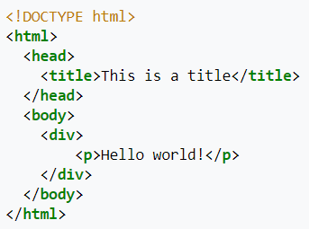

| Timothy John Berners-Lee 8 June 1955 (age 66) London, England |
| TimBL,TBL |
|---|---|
| The Queen's College, Oxford (BA) |
| Nancy Carlson (m. 1990; div. 2011),Rosemary Leith (m. 2014) |
| 2 children; 3 step-children |
| Conway Berners-Lee, Mary Lee Woods |
| Turing Award (2016),Queen Elizabeth Prize (2013),Foreign Associate of the National Academy of Sciences (2009),Order of Merit (2007),ACM Software System Award (1995) |
Scientific career |
| CERN
Massachusetts Institute of Technology
World Wide Web Consortium
University of Oxford University of Southampton |

The text between < html> and < /html> describes the web page, and the text between < body> and < /body> is the
visible page content. The markup text < title>This is a title< /title> defines the browser page title shown on browser
tabs and window titles, and the tag < div> defines a division of the page used for easy styling.
The Document Type Declaration is for HTML5. If a declaration is not included, various browsers will revert to
"quirks mode" for rendering.
TO BE CONTINUED........